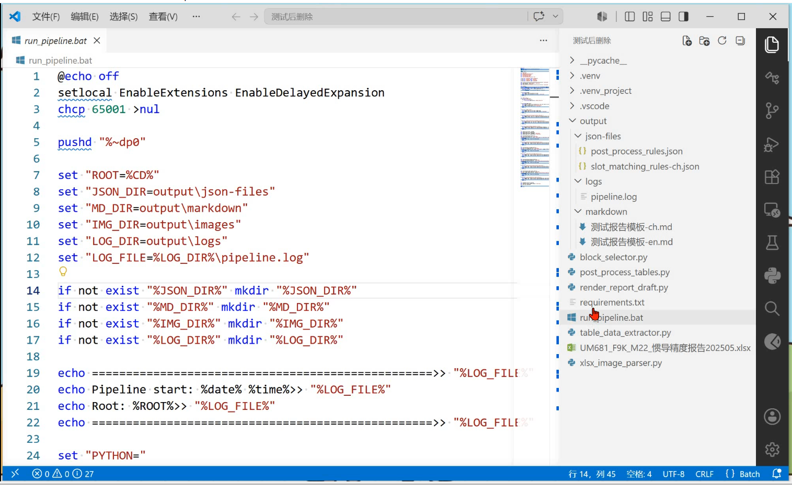

上半年完成新文档的制作与历史文档的迭代更新。
数据截止到6月25日
数据截止到6月25日
数据截止到6月25日
自2025年8月完成新工具链开发，逐步迁离 Typora平台。
新平台具备以下三大核心优势：
团队上手快，平滑过渡
CSS/JS 深度定制能力强
开源工具链，无商业授权费用
实现了更低的成本和更高的效率
Excel 以 sheet 为单位直接拆分、合并 (GUI界面)
Table block 数据原样提取并导出为 Markdown
Image block 提取
Table 数据后处理，支持输出正式表格 (最耗时环节突破)
测试报告渲染，将图表注入模板 slot
Pipeline 脚本串联所有脚本，实现初阶自动化

显著提效：预期工期从 1周 缩短至 2~3天。
“未加思考地听从 AI，人就会变成 AI 的工具。不为 AI 器。
执行任务时主动思考可自动化空间。例如采用 AI 生成语音方案替代人工配音，克服口误重来，极大地提高了配音和剪辑效率，将工期缩短至少2~3个工作日。收藏的学习资源才不止于收藏夹。
灵感不是偶然的闪现，而是来自于持续的积累和思考。在无所产出时持续在潜意识里观察、建构，直到某个瞬间形成想法。
“持续优化工具链，提升文档制作效率与质量。”